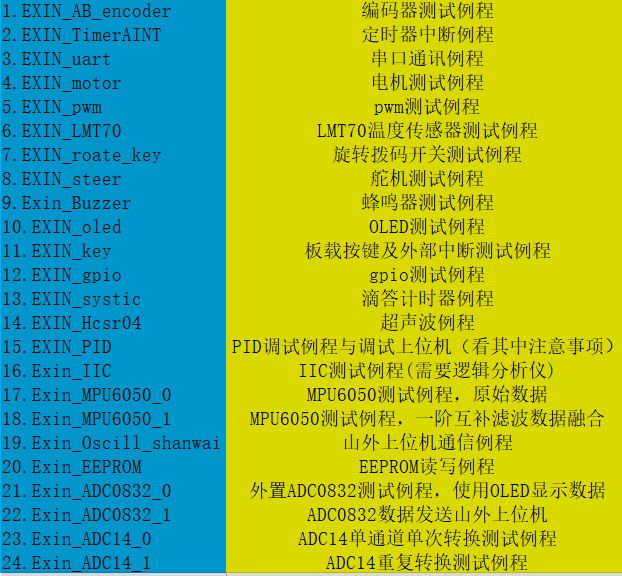

猫巾的博客
猫巾的博客
e芯MSP432开源函数库及例程下载链接如下：
https://github.com/hihii11/MSP432project
相关教程链接:
https://www.bilibili.com/video/BV1ER4y1W72R?from...
函数库包含:
| C语言文件 | 内容 |
| exinsystem.c | 滴答定时器、时钟设置 |
| exinGPIO.c | GPIO库函数 |
| exinTimerA.c | TimerA设置 |
| exinTimerAINT.c | 定时器中断设置 |
| exinuart.c | 串口配置 |
| exinIIC.c | 模拟IIC设置 |
| exinpwm.c | PWM波设置 |
| exinencodeer.c | 正交解码设置 |
| exinADC.c | ADC14驱动库 |
| exinisr.c | 中断函数 |
| exinekey.c | 板载按键 |
| exineadjust.c | 旋转拨码开关 |
| exinemotor.c | 电机配置 |
| exineHC_SR04.c | 超声波测距 |
| exineADC0832.c | 板载拓展ADC |
| exineeprom.c | EEPROM存储器 |
| exinMPU6050.c | MPU6050陀螺仪 |
例程包含:
